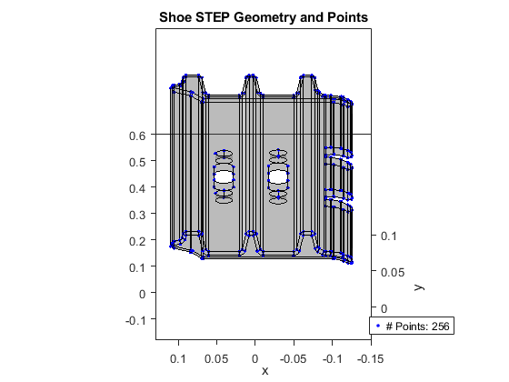
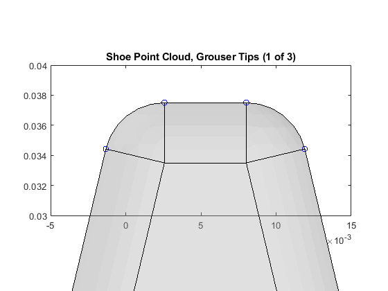
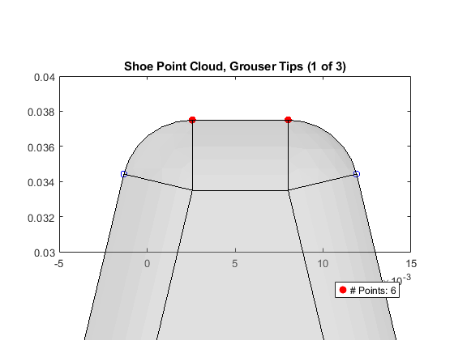
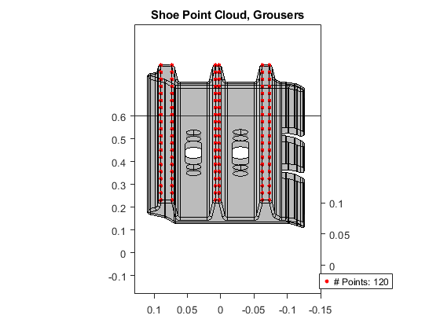

Extracting Point Cloud from STEP Geometry: Track Shoe
This example shows MATLAB commands to obtain coordinates for the point cloud that is used to detect collision between the track shoe grousers and the ground terrain. The STEP file for the track shoe is read into MATLAB, and then a few commands are used to extract just the points that are useful for the contact and friction force calculation.
The code used in the example is track_shoe_ptcloud_createFromSTEP.m.
Return to overview Tracked Vehicle Model with Simscape™
Copyright 2023-2024 The MathWorks, Inc
Contents
Read in the STEP file, plot geometry
The importGeometry and pdegplot commands are very useful for working with STEP files.
% Read in STEP file model = createpde(1); trshoe_geoObj = importGeometry(model,'CAD_Track_Shoe.STEP'); numPtsAll = size(trshoe_geoObj.Vertices,1); % Plot geometry figure(1) pdegplot(trshoe_geoObj,"FaceAlpha",0.2); view(-180,-70) ylabel('y') xlabel('x') axis equal set(gca,'XLim',[-0.1501 0.1285]) set(gca,'YLim',[-0.0454 0.1010]) % Highlight points hold on h2=plot3(trshoe_geoObj.Vertices(:,1),trshoe_geoObj.Vertices(:,2),trshoe_geoObj.Vertices(:,3),... 'bo','MarkerFaceColor','blue','MarkerSize',2); hold off view(-180,-70) title('Shoe STEP Geometry and Points') box on legend(h2,['# Points: ' num2str(numPtsAll)],'Location','Best')
Filter Points Based on Location: Full Profile
As the data is all in x-y-z coordinates, we can look for points within an x-y plane to obtain points around the shoe profile. The code below finds points in a specific plane.
% Extract all points within the plane z=4 mm ind_z_lim = intersect(... find(trshoe_geoObj.Vertices(:,3) >= 3.95/1000),... find(trshoe_geoObj.Vertices(:,3) <= 4.05/1000)); trshoe_stp_pts_z = trshoe_geoObj.Vertices(ind_z_lim,:); numPtsUZ = length(trshoe_stp_pts_z); % Plot geometry and highlighted points figure(2) h1=pdegplot(trshoe_geoObj,"FaceAlpha",0.2); hold on h2=plot3(trshoe_stp_pts_z(:,1),trshoe_stp_pts_z(:,2),trshoe_stp_pts_z(:,3),... 'bo','MarkerFaceColor','blue','MarkerSize',2); hold off axis equal title('Shoe Profile Points') view(-180,-70) ylabel('y') xlabel('x') axis equal set(gca,'XLim',[-0.1501 0.1285]) set(gca,'YLim',[-0.0454 0.1010]) box on legend(h2,['# Points: ' num2str(numPtsUZ)],'Location','Best')
Filter Points Based on Location: Grouser Tips
We only need the points at the tips of the grousers, as a separate set of points will be used to model contact at the shoe plate. To extract these points, we can zoom in on the grouser tips to see which height range has points suitable for contact. We can then extract those points by only selecting points at or above a certain height.
% Plot grouser tip figure(3) pdegplot(trshoe_geoObj,"FaceAlpha",0.2); hold on plot3(trshoe_stp_pts_z(:,1),trshoe_stp_pts_z(:,2),trshoe_stp_pts_z(:,3),'bo') hold off set(gca,'XLim',[-5 15]/1000) set(gca,'YLim',[30 40]/1000) title('Shoe Point Cloud, Grouser Tips (1 of 3)') view(0,90) box on
% Extract points above height 37.455 mm ind_y_lim = find(trshoe_stp_pts_z(:,2) >= 37.455/1000); trshoe_stp_pts_yz = trshoe_stp_pts_z(ind_y_lim,:); numPtsUYZ = length(trshoe_stp_pts_yz); % Plot tip highlighting points selected for ground contact figure(4) pdegplot(trshoe_geoObj,"FaceAlpha",0.2); hold on plot3(trshoe_stp_pts_z(:,1),trshoe_stp_pts_z(:,2),trshoe_stp_pts_z(:,3),'bo'); h3=plot3(trshoe_stp_pts_yz(:,1),trshoe_stp_pts_yz(:,2),trshoe_stp_pts_yz(:,3),... 'ro','MarkerFaceColor','red'); hold off set(gca,'XLim',[-5 15]/1000) set(gca,'YLim',[30 40]/1000) %title('Grouser Tip Points (1 Grouser of 3), Point Cloud Only') title('Shoe Point Cloud, Grouser Tips (1 of 3)') view(0,90) box on legend(h3,['# Points: ' num2str(numPtsUYZ)],'Location','Best')
Create Point Cloud for Grouser Tips
Now that we have the set of points within one plane that capture the grouser tips, we can replicate that set of points along a set of x-y planes along the width of the track shoe.
% Create 20 locations for points along the width of the track shoe ptcld_z = linspace(4,596,20)/1000; % Create 20 sets of x-y-z points, varying the z location ptcld_grousers = []; vector_zPts = ones(size(trshoe_stp_pts_yz(:,1))); for i = 1:length(ptcld_z) ptcld_grousers = [... ptcld_grousers; trshoe_stp_pts_yz(:,1:2) vector_zPts*ptcld_z(i)]; end numPtsPtcld = size(ptcld_grousers,1); % Plot the STL mesh and points for point cloud figure(5) pdegplot(trshoe_geoObj,"FaceAlpha",0.2); hold on h2=plot3(ptcld_grousers(:,1),ptcld_grousers(:,2),ptcld_grousers(:,3),'ro',... 'MarkerFaceColor','red','MarkerSize',3); hold off axis equal view(-180,-70) box on set(gca,'XLim',[-0.1501 0.1285]) set(gca,'YLim',[-0.0454 0.1010]) title('Shoe Point Cloud, Grousers') legend(h2,['# Points: ' num2str(numPtsPtcld)],'Location','Best')
Get Points for Shoe plate
If the ground is soft, the grousers will penetrate into the ground and the shoe plate will carry most of the contact force with the ground. A point cloud for just the plate is needed. This point cloud will have a rectangular shape and be positioned on the upper surface of the shoe. We will use MATLAB to extract these dimensions from the CAD geometry.
% Plot mesh figure(6) pdegplot(trshoe_geoObj,"FaceAlpha",0.2); axis equal set(gca,'XLim',[-0.1324 0.1155]) set(gca,'YLim',[-0.0516 0.0823]) % Highlight points hold on h2=plot3(trshoe_geoObj.Vertices(:,1),trshoe_geoObj.Vertices(:,2),trshoe_geoObj.Vertices(:,3),... 'bo','MarkerFaceColor','blue','MarkerSize',2); hold off view(0,90) title('Shoe STEP Geometry and Points') box on
ind_xy_lim = intersect(intersect(... find(trshoe_geoObj.Vertices(:,1) >= 25/1000),... find(trshoe_geoObj.Vertices(:,1) <= 55/1000)),... find(trshoe_geoObj.Vertices(:,2) >= 5/1000)); trshoeplate_stp_pts_xy = trshoe_geoObj.Vertices(ind_xy_lim,:); hold on h3=plot3(trshoeplate_stp_pts_xy(:,1),trshoeplate_stp_pts_xy(:,2),trshoeplate_stp_pts_xy(:,3),... 'ro','MarkerFaceColor','red','MarkerSize',5); hold off plate_height = mean(trshoeplate_stp_pts_xy(:,2)); legend(h3,['Plate Height ' num2str(plate_height) ' cm'],'Location','NorthWest')
Construct Point Cloud for Shoe Plate
The width of the plate is 0.6m, which can be obtained from the figure. The point cloud needs to cover the shoe plate evenly and should not overlap with the next shoe. We need to have evenly spaced gaps between the lines of the point cloud including a gap between two shoes. To set the length of the point cloud patch, we need to know the length of the plate and the number of rows of points we plan to place. That way, we can leave half a gap at either end to keep the density of points even across the entire track.
num_rows = 3; plate_width = (596-4)/1000; % Visual inspection CAD geometry plate_length = 200/1000; % Distance between pin centers cloud_len = plate_length*num_rows/(num_rows +1); grid_spacing = cloud_len/2; num_cols = round((plate_width)/grid_spacing)+1; temp_plate_pts = Point_Cloud_Data_Square(cloud_len,plate_width,[num_rows num_cols],'plot');
ptcloud_plate = [temp_plate_pts(:,1) temp_plate_pts(:,1)*0+plate_height temp_plate_pts(:,2)+plate_width/2]; figure(7) pdegplot(trshoe_geoObj,"FaceAlpha",0.2); axis equal hold on h3=plot3(ptcloud_plate(:,1),ptcloud_plate(:,2),ptcloud_plate(:,3),... 'ro','MarkerFaceColor','red','MarkerSize',6); h4=plot3(ptcloud_plate(:,1)+plate_length,ptcloud_plate(:,2),ptcloud_plate(:,3),... 'go','MarkerFaceColor','green','MarkerSize',6); hold off box on title('Shoe Point Cloud, Plate') legend([h3 h4],{'Point Cloud Shoe 1','Point Cloud Shoe 2'},'Location','North') view(180,0) set(gca,'XLim',[-0.2130 0.3705]) set(gca,'ZLim',[-0.0547 0.7253])
close all